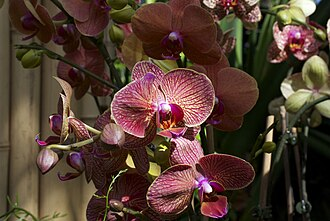

Orchid

Orchids are plants that belong to the family Orchidaceae a diverse and widespread group of flowering plants with blooms that are often colourful and fragrant. Orchids are cosmopolitan plants, living in diverse habitats on every continent except Antarctica. The world's richest diversity of orchid genera and species is in the tropics. Many species are epiphytes, living on trees. The flowers and their pollination mechanisms are highly specialized, attracting insect pollinators by colour, pattern, scent, pheromones, and sometimes by mimicking female insects. Orchids have very small seeds, relying on fungal partners for germination. Some orchids have no leaves, either photosynthesizing with their roots or relying entirely on fungal partners for food. Orchids are easily distinguished from other plants, as most of them share some very evident derived characteristics or synapomorphies. Among these are: bilateral symmetry of the flower (zygomorphism), many resupinate flowers, a nearly always highly modified middle petal (labellum), stamens and carpels fused into a column, and extremely small seeds.
Read more...
Care
Orchids are easy to grow and maintain when their light, soil, water, and fertilizer needs are met. When caring for an orchid, keep the following requirements in mind:
Water
Overwatering is a common reason orchids don't survive. You should aim to water the plant just before the soil dries out. One way to gauge this is by how heavy the pot feels. The heavier it is, the more water the soil contains.
"After watering, make sure no water remains in the crown or the leaf joints of the plant," says Bruce Rogers, author of The Orchid Whisperer, Expert Secrets for Growing Beautiful Orchids. "Do this by turning your orchid to the side, which will drain water from the crown.
Soil
Orchids need fast-draining but water-retentive soil. Typically, they grow in a mix of bark, peat, perlite, or similar materials, says Melinda Myers, gardening expert and host of the Great Courses How to Grow Anything DVD series. You can buy potting soil for orchids or make your own.
Light
Give your orchid at least six hours of bright, indirect light from a south or east-facing window. While many orchids can handle more or less light, access to ample light enhances flowering potential.
Fertilizer
Orchids should be fed with fertilizer regularly during the growing season, says Meyers. Apply a balanced fertilizer specific for orchids, such as 20-20-20, about once a week. You can stop fertilizing during winter when the plants are not actively growing.
Temperature
The ideal temperature orchids need varies depending on the species. They are usually classified as either cool-, intermediate- or warm-growing depending on their temperature requirements. The usual definitions of these ranges in degrees Fahrenheit are:
- Cool: 60 to 70 degrees during the day and 50 to 55 degrees during the night
- Intermediate: 70 to 80 degrees during the day and 55 to 65 degrees during the night
- Warm: 80 to 90 degrees during the day and 65 to 70 degrees during the night
Read more...
Meaning
Like many blooms, the meaning of an orchid can change depending on its colour.
Historically, orchids symbolised refined beauty. In Victorian Britain, they were worn by those dressing to impress, and were often seen pinned to gentlemen’s buttonholes. They were striking but simple, and guaranteed eyecatchers.
Across cultures and time periods, orchids have represented:
- Luxury
- Strength
- Elegance
- Admiration
- Enduring love
Orchid Color Meanings
- White – Innocence and new beginnings
- Pink – Grace and admiration
- Red – Passion and deep love
- Yellow – Friendship and joy
- Purple – Respect and admiration
- Green – Good health and longevity
- Orange – Pride and confidence
Read more...